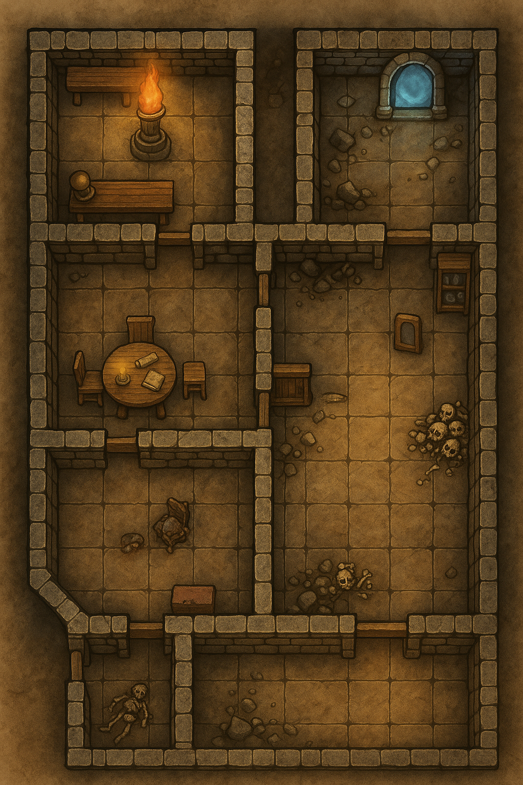

A5 booklet proof — Artificer’s Workshop spread

Description
Two cells about 15' x 15' where players wake up on slick stone floors, with no memory of how they got there.. Each cell has a single cell door.. Through the door hanging just under 30' away are keys hanging on a hook. Just outside the cells, below the keys is a pile of supplies and equipment.
Trap: If the keys are lifted from the hook. Players hear an audible click, followed by grinding stone as the ceiling in both cells begins to lower.
Treasure:
GM Note
Hand these out as equipment-deck Item Cards. Character sheets start empty, so this pile is how the party arms itself.
Read Aloud (when triggered)
The keys come free, and somewhere above the cells, a faint click, then a long low grinding noise as old gears begin to turn. Dust drifts down from the seams in the ceiling. The stones are moving.
Movement under the descending ceiling The ceiling begins at 7 ft above the cell floor and descends 1 ft per round.
| Round | Ceiling Height | Effect |
|---|---|---|
| 1 | 6 ft | Tall PCs (6 ft+) must stoop. Everyone else moves normally. No damage. |
| 2 | 5 ft | All Medium creatures must duck. Movement at half. No damage. |
| 3 | 4 ft | Hunched walk or crouch. Movement at half. No damage. |
| 4 | 3 ft | Must crawl. Movement at1/4 speed. No damage. |
| 5 | 2 ft | Prone crawl only. Movement at1/4 speed. No damage. |
| 6 | 1 ft | 4d6 bludgeoning to anyone still in the cells. Dex save DC 14 for half. A creature reduced to 0 HP is pinned and dying, but can still be saved or pulled out by a teammate next round. |
| 7+ | Floor-level | Everyone still in the cells is dead. No saves, no rolls, no recovery. Just crushed. Bodies cannot be recovered until the mechanism is reset or disabled. |
Description
Standing in the center of the room is a statue of a tall man in flowing robes, his right hand extended with a single finger pointing at the door to the Cells. The statue is carved of pure stone, with every detail carefully captured. A brass plaque is set into the pedestal.
Some earn roses. Some earn scorn. Both may take their bow. But he who earns only silence Must never leave the stage.
GM Note
Hand the players the plaque handout so they can read the verse. The verse means any audience reaction, even scorn or a bad review, can end the performance. The party does not need to laugh or applaud.
Treasure:
GM Note
The potion is a reward for playing along with Grovlikk. Do not hand it out if the party only breaks things and flees.
Read Aloud (when triggered)
There is a sharp click, and every door into the room slams shut and locks. For a second nothing happens. Then the statue’s stone eyes begin to water, its grin seems to widen, and a deep wet gurgle builds inside the pedestal. Yellow-green vapor vents from the statue’s backside and spreads across the floor toward you.
Detection:
Perception DC 18: Notice the pluggled/hidden small holes barely noticable that covers the bottom of the Statue.
Deactivate: The trap cannot be stopped by mechanical means.
GM Note
The players may try to break the statue, jam the doors, block the vents, pick the locks, force the doors, or dispel the gas. These attempts may provide clues or minor temporary benefits, but they do not end the trap and do not open the doors.
This cloud is a stronger, nastier version of Stinking Cloud. It burns the throat, eyes, and lungs while forcing victims to gag and retch.
Save DC: 13 Constitution
Cloud Expansion
| Initiative Count | Round | Notes |
|---|---|---|
| 20 | 1 | The cloud fills a 10-foot radius around the statue. Only creatures in that area are affected. |
| 18 | 2 | The cloud expands to fill half the room. |
| 15 | 3 | The cloud fills the entire room. Every creature in the room is affected at the start of its turn. The cloud remains until the players solve the room. |
Once the cloud fills at least half the room:
Any creature that starts its turn inside the cloud must make a DC 13 Constitution saving throw.
On a Failure:
1d4+1 poison damage every round they're in the cloud.On a Success:
1d4+1 poison damage, minimum 1 poison damage.Creatures that do not need to breathe have advantage on the saving throw.
Creatures immune to poison automatically succeed against the retching effect but still take 1 poison damage if they remain in the cloud.
GM Note
Grovlikk the once powerful Artificer of Xhal’theris, the Velvet Maw - always enjoyed comedy. Even fancied himself a bit of a comedian. When Grovlikk dared challenge his master, Xhal'theris turned the foolish Artificer to a statue. Seeing him standing there his finger extended, Xhal'theris took great pleasure in turning this fool into yet another trap in his dungeon.. Considerin'g Grovlikk's love of comedy - he thought this trap would would be appropriate. This room, once Grovlikk's personal experiment chamber, where so many of his subjects met their fate; is now his own prison. Roll initiative immediately when triggered! The trap acts on initiative count 20 each round 1, then moves to Initiative 18, then 15.. It reduces by 2 places each subsequent turn.
Description
Shelves cover the walls of this room, with all manner of book and scroll lining the shelves.
Treasure:
See Prop..
GM Note
The library's permanent and themed spellbooks are Treasure Goblin vendor stock, not free room loot. The portal-instruction scroll is a handout gated on the crystal clue chain.
Description
A large mirror stands against the far wall in front of it sits a large cyrstal sphere on a pedestal. The images on the mirror are blurry and change rapidly. The pedestal has 8 distinct round slots that ring the sphere.
Treasure:
GM Note
This room is deliberately bare. Do not place coin, magic items, or a crystal here.
GM Note
Anyone that Steps through the portal without using a Control Crystal is teleported to random places within the Dungeon.. The portal changes as every person steps through.
This is the win condition for the whole one-shot.
What the players see
The mirror's images never settle. In front of it the crystal sphere sits on its pedestal, and eight round sockets ring the sphere. The sockets are empty and waiting.
Intended solution
Gather all eight Key crystals, Green, White, Yellow, Blue, Purple, Red, Magenta, and Black, and set them into the eight sockets. There is no order to solve. The moment all eight Key crystals are seated, they force the exit Portal open. Any order works, so the whole challenge is finding and recovering all eight shards, not arranging them.
Clues and where they live
Fail state
Stepping through without setting the sphere teleports the character to a random spot in the dungeon, per the random-teleport roll above (1d8 for the point, 1d12+4 for distance in five-foot increments). The portal reshuffles with every person who steps through, so rushing it scatters the party.
Hint ladder
GM Note
The exit needs all eight Key crystals and nothing more. Placing all eight forces the Portal open in any order. There is no star-lock sequence, no correct placement order, and no Scrying Stone answer key for an order. The eight shards, the eight sockets, and the random-teleport penalty are fixed in crystals.md, this file, and props/scryingstone.md.
Description
This large room contains the remains of several of Grovlikk's followers, long sense dead.
Treasure:
See bag
GM Note
The skeletons guard this stash. Any permanent magic items for this area, such as a +1 weapon, Bag of Holding, or Rope of Climbing, are Treasure Goblin vendor stock, not chest loot.
Read Aloud (when the skeletons rise)
Among the long-dead bodies, bones begin to stir. Several skeletons drag themselves upright, armed with rusted blades, and come straight at you the moment you cross the threshold.
Medium Undead, Lawful Evil | AC 13 (armor scraps) | HP 13 (2d8 + 4) | Speed 30 ft.
| STR | DEX | CON | INT | WIS | CHA |
|---|---|---|---|---|---|
| 10 (+0) | 16 (+3) | 15 (+2) | 6 (-2) | 8 (-1) | 5 (-3) |
Damage Vulnerabilities Bludgeoning | Damage Immunities Poison | Condition Immunities Exhaustion, Poisoned | Senses darkvision 60 ft., passive Perception 9 | Languages understands what it knew in life, cannot speak | Challenge 1/4 (50 XP) PB +2
Shortsword. Melee Attack Roll: +5, reach 5 ft. Hit: 6 (1d6 + 3) Piercing.
Shortbow. Ranged Attack Roll: +5, range 80/320 ft. Hit: 6 (1d6 + 3) Piercing.